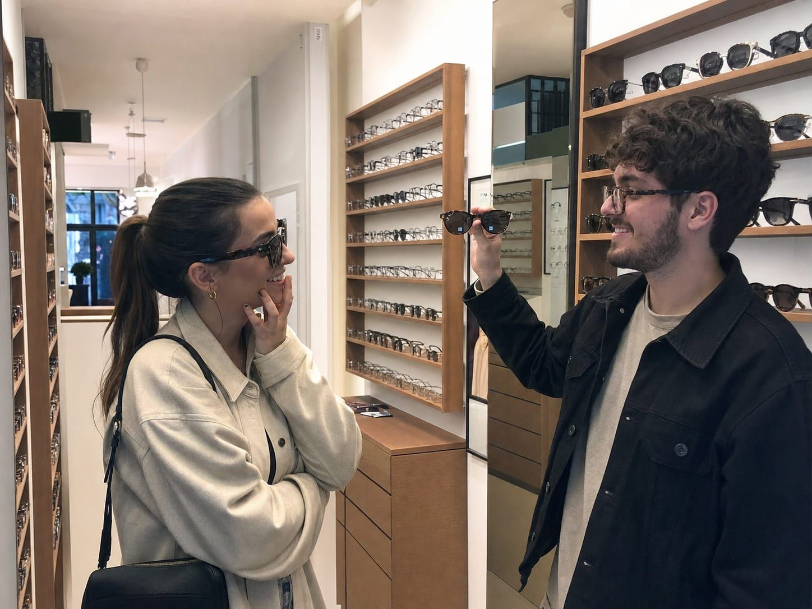

Napszemüvegek
UV400 szűrős és polarizált lencsék, akár saját dioptriával – hogy a vízparti nyár tényleg felhőtlen legyen.
A Balaton partján a nap kétszer süt: egyszer az égről, egyszer a vízfelszínről visszaverődve. Egy jó napszemüveg ezért nemcsak stílus kérdése, hanem szemvédelem is. Nálunk olyan darabot talál, amely valóban szűri a káros UV-sugárzást, nem csak sötétít.
Válasszon divatos kész napszemüveget, vagy kérje saját dioptriájával – így vezetés, strandolás vagy városi séta közben is élesen és védetten lát.
Amire a nyáron szüksége van
Nem mindegy, mi kerül a szeme elé a napsütésben.
UV400 védelem
Lencséink kiszűrik a káros ultraibolya sugárzást, óvva a szemét.
Polarizált lencsék
Csökkentik a vízről és útról visszaverődő zavaró csillogást.
Dioptriával is
Napvédő lencsét saját látásértékeivel is elkészítünk.
Divatos márkák
Ray-Ban, Oakley, Carrera, Police és további kedvencek közül válogathat.

A vízparthoz tervezve
A polarizált lencse igazi előnye a Balatonnál mutatkozik meg: eltünteti a víztükör vakító csillogását, így tisztábban lát, és a szeme sem fárad el olyan gyorsan. Vezetéshez, vitorlázáshoz, strandoláshoz egyaránt ideális.
- Stílusos, mégis strapabíró keretek
- Gyerekméretek is a legkisebbeknek
- Klipszes megoldások szemüvegre
- Szakértő tanácsadás az arcformájához
Milyen lencsét válasszon?
Nem mindegy, mi kerül a napszemüvegébe – segítünk eligazodni.
UV400
Alapvető szemvédelem
- Kiszűri a káros UV-sugárzást
- Minden napszemüvegünk alapja
- Gyerekeknek is ajánlott
Polarizált
Csillogásmentes látás
- Kioltja a vízről visszaverődő fényt
- Vezetéshez, vízparthoz ideális
- Kevésbé fárad a szem
Fotokromatikus
Fényre sötétedő
- Kültéren sötétedik, bent kivilágosodik
- Egy szemüveg két helyzetre
- Dioptriával is kérhető
Kedvenc napszemüveg-márkák


Nézzen be, és próbálja fel
Segítünk megtalálni az arcformájához és a nyarához illő napszemüveget – dioptriával is.